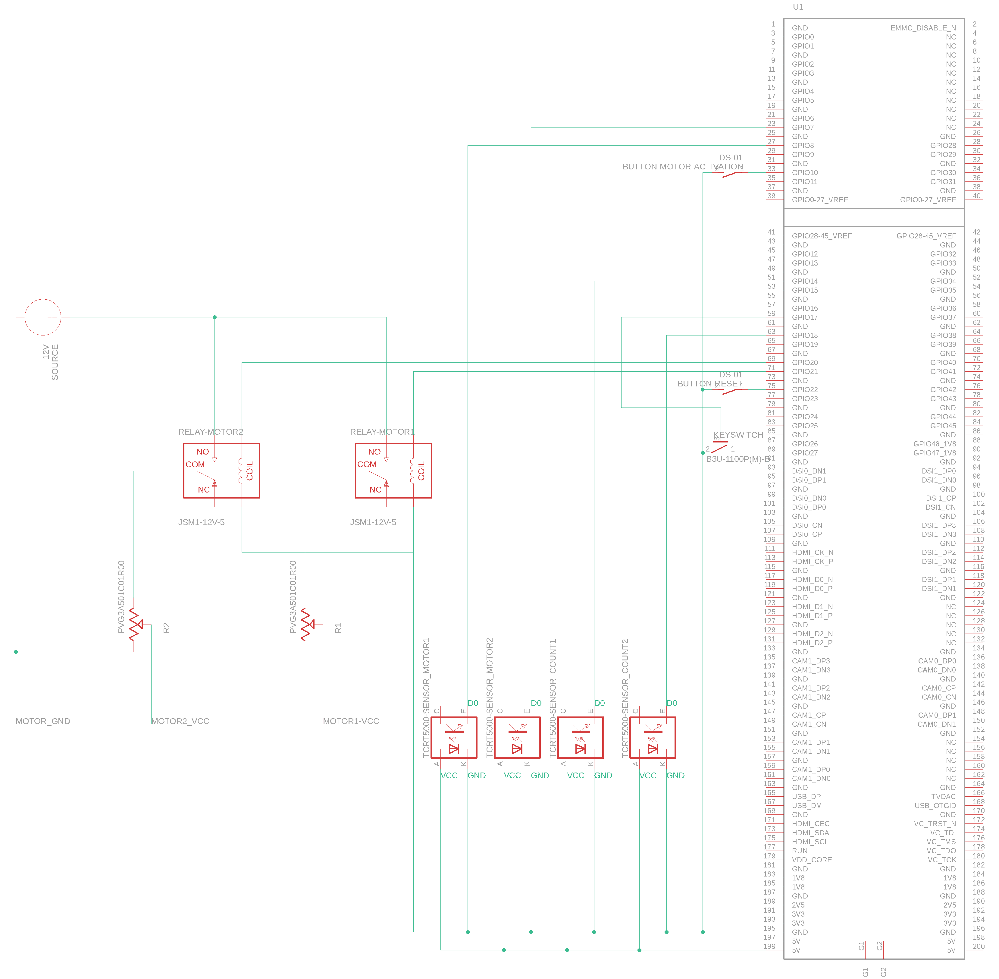

Chipzähler mit Tagesverlauf, Vibrationsmotor und Touchscreen.
Diese Materialien werden für das System benötigt:
| Device | Price | Amount | Link |
|---|---|---|---|
| Raspberry PI 4B | 66€ | 1 | Amazon |
| 5" Touch Display | 39,99€ | 1 | Amazon |
| Button Set | 7,25€ | 1 | Amazon |
| Schlüsselschalter | 9,03€ | 1 | Amazon |
| Infrarot Sender und Empfänger | 6,99€ | 1 | Amazon |
| GPIO Breakoput Board | 14,95€ | 1 | Amazon |
| Jumper Kabel | 5,94€ | 1 | Amazon |
| Elektrische Bauteile | 18,69€ | 1 | Amazon |
| 12V Vibrationsmotor (?) | 17,99€ | 1 | Amazon |
| PWM Drehzahl Steller | 7,99€ | 1 | Amazon |
| 12V Netzteil | 8,90€ | 1 | Amazon |
| Doppelrelais 5V steuerspannung | 11,78€ | 1 | Amazon |
Das System muss wie folgt aufgebaut werden. Die genaue Pinbelegung kann aus der Config entnommen werden.

Das System ist designt um Chips zu zählen. Da es zwei verschiedene Arten von Chips gibt, werden zwei verschiedene Auffangbehältnisse eingerichtet, welche das System mit zwei Motoren unabhängig voneinander ansteuert, damit diese Vibrieren und die Chips in den Zählschlitz befördern. Dort befindet sich ein Infrarotsensor, welcher die Chips je nach Farbe zählt und auf dem Display anzeigt. Am Einwurf der Auffangbehälter wird auch ein Infrarotsensor montiert, damit die Vibration automatisch eingeleitet wird.
Das System inkorporiert mehrere Steuereinheiten um das Verhalten zu modifizieren.
Pin 10)Pin 22)Pin 27)Pin 17)Zusätzlich können in der Adminansicht über den Touchscreen Einstellungen vorgenommen werden.
In der Adminansicht lassen sich die Daten des ganzen Tages wiederfinden, inklusive der Zählungen mit Faktor inkludiert. Die Daten werden stündlich in einem Barchart angezeigt, um Informationen über die tägliche Auslastung zu erhalten.
Durch die Adminansicht kann man auch in die Einstellungen (Settings oben rechts) gelangen.
In den Einstellungen kann die Motorlaufzeit und der Faktor eingestellt werden.
Zusätzlich kann man dort auch alle Zähler zurücksetzen und das Programm schließen.
{kind=link}